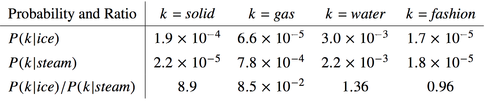

Lecture 3
Last week:
This week:
Both will be helpful for Assignment 1
The machine learning approach requires the minimization of some cost/loss function, which is often done using some variation of gradient descent. \[\theta \leftarrow \theta - \alpha\frac{\partial \mathcal{E}}{\partial \theta}\]
\[\theta \leftarrow \theta - \alpha\frac{\partial \mathcal{E}}{\partial \theta}\]
Approaches to computing derivatives:
\[\theta \leftarrow \theta - \alpha\frac{\partial \mathcal{E}}{\partial \theta}\]
Approaches to computing derivatives:
Numeric differentiation (using finite difference approximations)
Symbolic differentiation (using expression manipulation)
Steps:
We will discuss how an automatic differentiation library could be implemented
You will probably never have to implement autodiff yourself but it is good to know its inner workings!
Key Insight: For any new deep learning model that we can come up with, if each step of our computation is differentiable, then we can train that model using gradient descent.
Notation: \(x\) is the input, \(y=f(x)\) is the output, we want to compute \(\frac{dy}{dx}\)
Automatic Differentiation Steps:
Operations:
Exercise: Draw the computation graph:
Based on the computation graph, we can compute \(\frac{dy}{dx}\) via a forward and a backward pass.
More generally, input/output to a computation may be vectors
def f(a, w): # a and w are both vectors with size 10
h = a
for i in range(3):
h = np.dot(w, h) + h
z = w * h # element wise multiplication
return zSo we have \(\bf{y} = f(\bf{x})\) (in this example, \(\bf{x}\) consists of values in both a and w)
Q: In our running example, what are the dimensions of \({\bf x}\) and \({\bf y}\)?
We wish to compute the gradients \(\frac{\partial y_k}{\partial x_i}\) for each \(k\) and \(i\), at some \(\bf{x}\).
In other words, we would like the to work with the Jacobian matrix
\[\begin{align*} J_f({\bf x}) &= \begin{bmatrix} \frac{\partial y_1}{\partial x_1}({\bf x}) & \ldots & \frac{\partial y_1}{\partial x_n}({\bf x}) \\ \vdots & \ddots & \vdots \\ \frac{\partial y_m}{\partial x_1}({\bf x}) & \ldots & \frac{\partial y_m}{\partial x_n}({\bf x}) \end{bmatrix} \end{align*}\]
\[\begin{align*} J_f({\bf x}) &= \begin{bmatrix} \frac{\partial y_1}{\partial x_1}({\bf x}) & \ldots & \frac{\partial y_1}{\partial x_n}({\bf x}) \\ \vdots & \ddots & \vdots \\ \frac{\partial y_m}{\partial x_1}({\bf x}) & \ldots & \frac{\partial y_m}{\partial x_n}({\bf x}) \end{bmatrix} \end{align*}\]
Note that we usually want to avoid explicitly constructing the entries of this Jacobian one by one.
Why? Computing all the partial derivatives one by one is expensive, even with backprop.
Suppose \(f = f_2 \circ f_1\), so we have the computations \({\bf y} = f_2 \circ f_1(\bf{x})\), or in other words: \[\begin{align*} {\bf z} &= f_1(\bf{x}) \\ {\bf y} &= f_2(\bf{z}) \end{align*}\]
If \(f_1\) and \(f_2\) are primitive operations with simple Jacobians, we can apply the Jacobian chain rule:
\[J_{f_2 \circ f_1}({\bf x}) = J_{f_2}({\bf z})J_{f_1}({\bf x})\]
This video explains the different ways to automatically compute derivatives:
https://www.youtube.com/watch?v=wG_nF1awSSY
In practice, computing entries of Jacobians one by one is expensive and we try to avoid it:
Q: Which of these two cases apply to deep learning most often?
Suppose \({\bf y}\) is a scalar, and represents the loss \(\mathcal{L}\) that we wish to minimize. \[\begin{align*} {\bf z} &= f_1(\bf{x}) \\ \mathcal{L} &= f_2(\bf{z}) = {\bf y} \in \mathbb{R} \end{align*}\]
Then we have:
Summary: For each primitive operation, we don’t need to be able to compute entire Jacobian matrix. We need to be able to compute the vector-Jacobian product.
For each primitive operation, we must specify the VJPs for each of its arguments
The VJP function should takes in the output gradient (i.e. \({\bar y}\)), the answer (\(y\)), and the arguments (\(x\)), and returns the input gradient (\({\bar x}\)). Here are some examples from https://github.com/mattjj/autodidact/blob/master/autograd/numpy/numpy_vjps.py
defvjp(anp.negative, lambda g, ans, x: -g)
defvjp(anp.exp, lambda g, ans, x: ans * g)
defvjp(anp.log, lambda g, ans, x: g / x)
defvjp(anp.add, lambda g, ans, x, y : unbroadcast(x, g),
lambda g, ans, x, y : unbroadcast(y, g))
defvjp(anp.multiply, lambda g, ans, x, y : unbroadcast(x, y * g),
lambda g, ans, x, y : unbroadcast(y, x * g))
defvjp(anp.subtract, lambda g, ans, x, y : unbroadcast(x, g),
lambda g, ans, x, y : unbroadcast(y, -g))This design provides modularity! Each node needs to know how to compute its outgoing messages, i.e. the VJPs corresponding to each of its parents (arguments to the function).
Recall the key insight from earlier: For any new deep learning model that we can come up with, if each step of our computation is differentiable, then we can train that model using gradient descent.
Example: Learning to learning by gradient descent by gradient descent https://arxiv.org/pdf/1606.04474.pdf
With AD, any program that has differentiable components can be optimized via gradient descent
A language model…
A language model gives us a way to compute \(p({\bf s})\)
Assume we have a corpus of sentences \({\bf s}^{(1)}, \ldots, {\bf s}^{(N)}\)
The maximum likelihood criterion says we want our model to maximize the probability that our model assigns to the observed sentences. We assume the sentences are independent, so that their probabilities multiply.
In maximum likelihood training, we want to maximize \[\prod_{i=1}^N p\left({\bf s}^{(i)}\right)\]
Or minimize: \[-\sum_{i=1}^N \log p\left({\bf s}^{(i)}\right)\]
Since \(p({\bf s})\) is usually small, \(-\log p({\bf s})\) is reasonably sized, and positive.
A sentence is a sequence of words \(w_1, w_2, \ldots, w_T\), so \[\begin{align*} p({\bf s}) &= p(w_1, w_2, \ldots, w_T) \\ &= p(w_1)p(w_2 | w_1) \ldots p(w_T | w_1, w_2, \ldots, w_{T-1}) \end{align*}\] We can make a simplifying Markov assumption that the distribution over the next word depends on the preceding few words.
In assignment 1, we use a context length of 3 and model: \[\begin{align*} p(w_t | w_1, w_2, \ldots, w_{t-1}) = p(w_t | w_{t-3}, w_{t-2}, w_{t-1}) \end{align*}\]
This is a self-supervised learning problem!
A simple way of modeling \(p(w_t | w_{t-2}, w_{t-1})\) is by constructing a table of conditional probabilities:
Where the probabilities come from the empirical distribution: \[p(w_3 = {\rm cat} | w_1 = {\rm the}, w_2 = {\rm fat}) = \frac{{\rm count}({\rm the\ fat\ cat})}{{\rm count}({\rm the\ fat})}\]
The phrases we’re counting are called n-grams (where n is the length), so this is an n-gram language model. (Note: the above example is considered a 3-gram model, not a 2-gram model!)
Ways to deal with data sparsity:
Conditional probability tables are a kind of local representation: all the information about a particular word is stored in one place: a column of the table.
But different words are related, so we ought to be able to share information between them.
Idea:
Distributed representations allows us to share information between related words. E.g., suppose we’ve seen the sentence
The cat got squashed in the garden on Friday.
This should help us predict the words in the sentence
The dog got flattened in the yard on (???)
An n-gram model can’t generalize this way, but a distributed representation might let us do so.
Since we are using one-hot encodings for the words, the weight matrix of the word embedding layer acts like a lookup table.
Terminology:
It’s hard to visualize an \(n\)-dimensional space, but there are algorithms for mapping the embeddings to two dimensions.
In assignment 1, we use algorithm called tSNE, which tries to make distances in the 2-D embedding match the original high-dimensional distances as closely as possible.
Idea: First fit the distributed word representations using GloVe, then plug these embeddings into a neural net that does some other task (e.g. translation)
Distributional Hypothesis: Words with similar distributions have similar meaning
Consider a co-occurrence matrix \(X\), which counts the number of times the words appear nearby (say, less than 5 positions apart)
This is a \(V \times V\) matrix, where \(V\) is the vocabulary size.
Sentence:
The cat got squashed in the garden on Friday. The dog got flattened in the yard on Thursday.
Part of the co-occurrence matrix:
| the | cat | dog | got | squashed | |||
|---|---|---|---|---|---|---|---|
| the | 0 | 1 | 0 | 1 | 0 | ||
| cat | 1 | 0 | 0 | 1 | 1 | ||
| dog | 1 | 0 | 0 | 1 | 0 | ||
| got | 2 | 1 | 1 | 0 | 1 | ||
| squashed | 0 | 1 | 1 | 1 | 0 |
Key insight: The co-occurrence matrix of words contain information about the semantic information (meaning) of words

In particular, the ratio of co-occurrences encodes semantic information!
Suppose we fit a rank-K approximation
\[{\bf X} \approx {\bf R}{\bf \hat{R}}^\top\]
Where \({\bf R}\) and \({\bf \hat{R}}\) are \(V \times K\) matrices
Pre-trained models are available for download:
https://nlp.stanford.edu/projects/glove/
Practitioners often use these embeddings to do other language modeling tasks.
Demo on Google Colab
https://colab.research.google.com/drive/1aNbE6HcawVF67RV0hWi4qK33Um7cKykr?usp=sharing
Word embeddings are inherently biased because there is bias in the training data.
Neural networks learn patterns in the training data, so if the training data contains human biases, then so will the trained model! This effect was seen in: